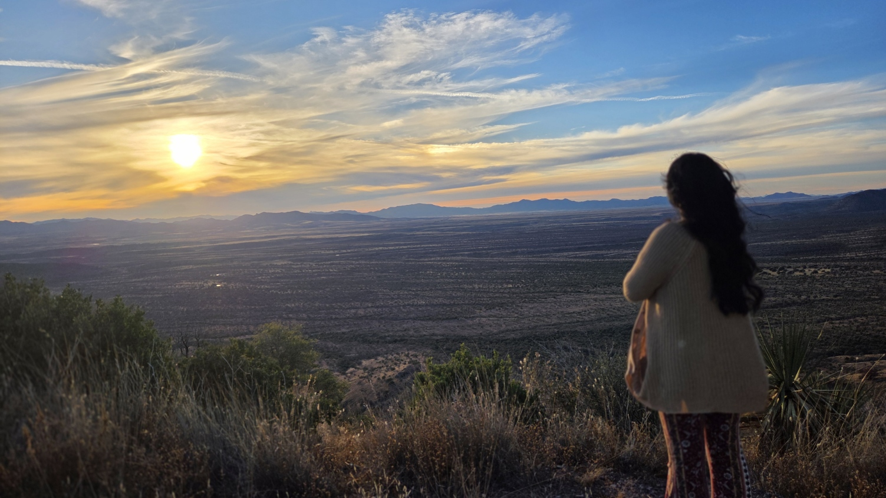
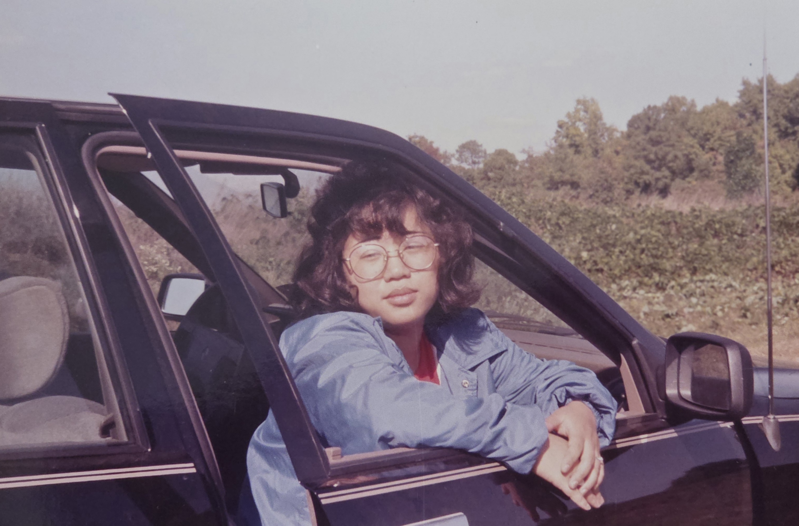
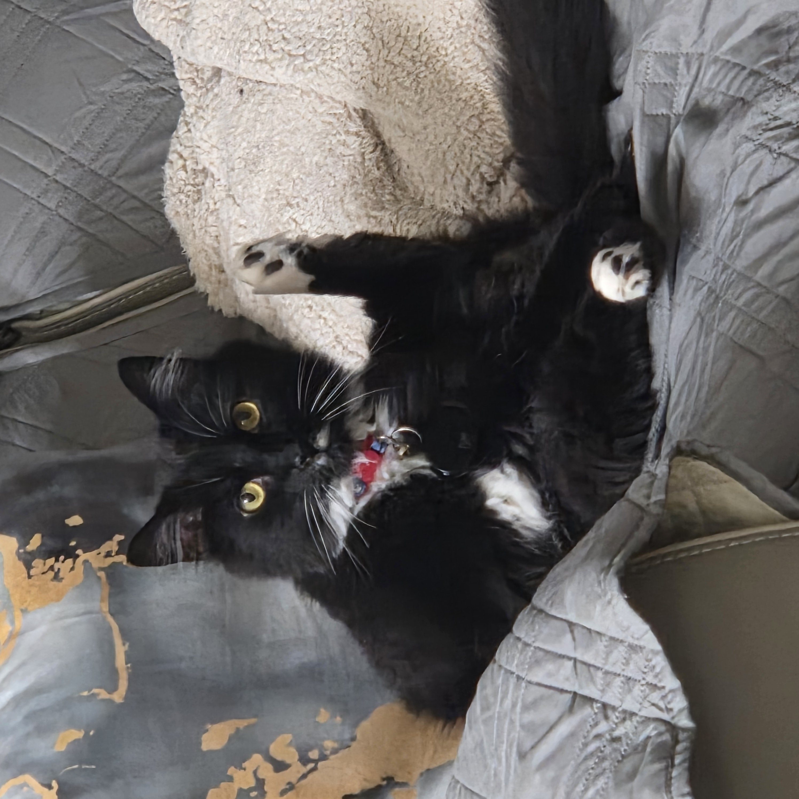
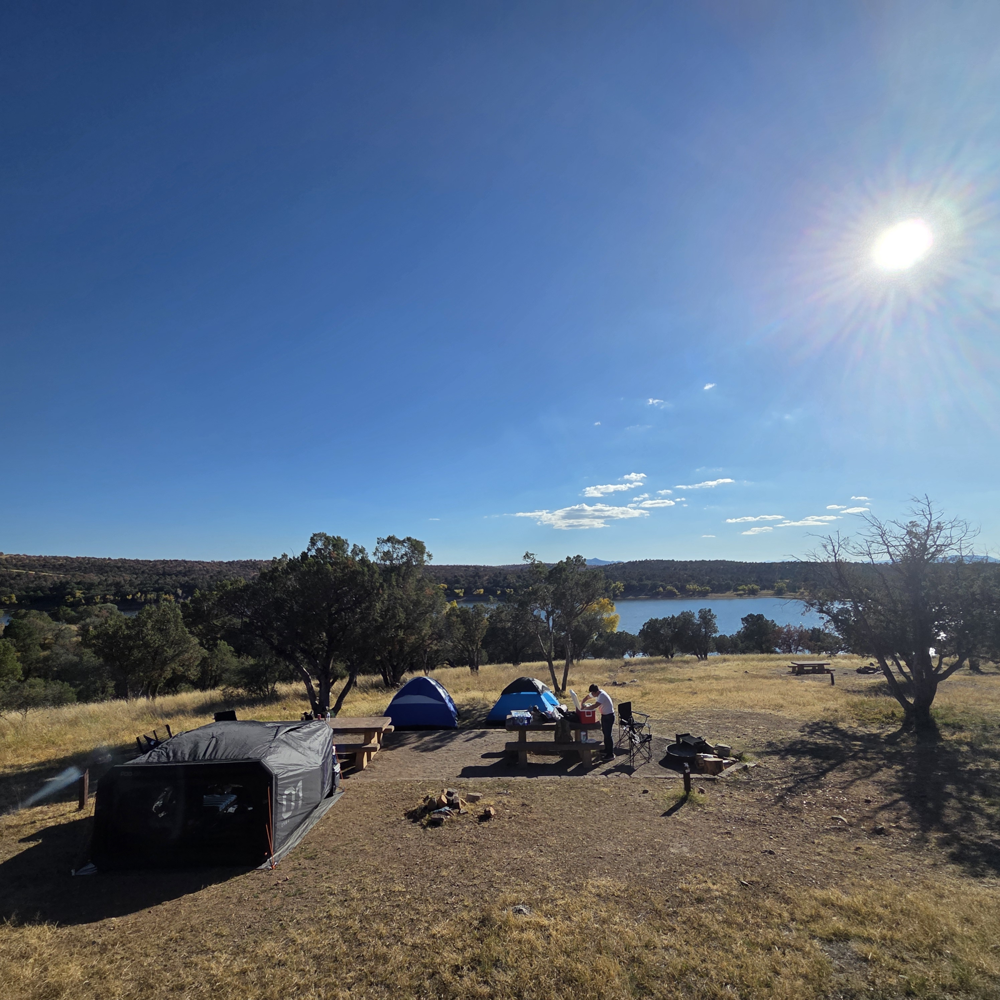

Background
Growing up, I've always loved to draw. I also played around with some basic html and css without even realizing it at such a young age. Then when I wanted to try to create content, I chose to do my best to keep all my assets on my social media platforms as authentic as possible. Over the years, I have been able to hone several skills in my kit with Streaming, Art/Graphic Design, and Video Editing. I have recently added Web Development to my skill set and I am excited to see where it takes me.
Interests
When I'm not working on my portfolio, I love to sing in my past time, or play Magic the Gathering:Arena. I also enjoy reading some books, listening to music, and occasionally playing the guitar!
Fun Facts
I'm a mother, a streamer, a singer, and a future web developer! I also have a BUNCH of art projects I've started and never finished! Lastly, my favorite foods are Kimchi Soup with Rice and Saba! Also, the ONLY thing I did not make on this website is the banner. It isn't mine, but I don't have a source for it since it's been on my computer for so long. If you know the source, please let me know so I can give proper credit!
Goals
My goals are to continue to grow my skill set and to eventually be able to work in the field of Web Development. I also want to continue to create content and share it with the world.
Currently:
I am probably taking care of my kiddo, doing house chores, or playing MTG:Arena.
A peek into my world







